September 19th
Today I learned an example a proof by universal properties, by proving that localization commutes with arbitrary direct sums. We show this here, with many pretty commutative diagrams.
For our first proof, we start with the obvious mappings as follows.
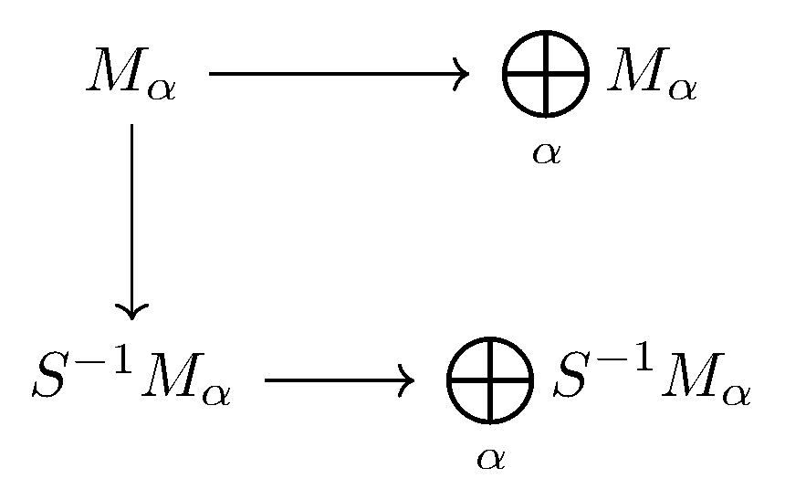The direct product $\bigoplus_\alpha M_\alpha$ gives us unique mapping $\bigoplus_\alpha M_\alpha\to\bigoplus_\alpha S^{-1}M_\alpha$ making the diagram commute.
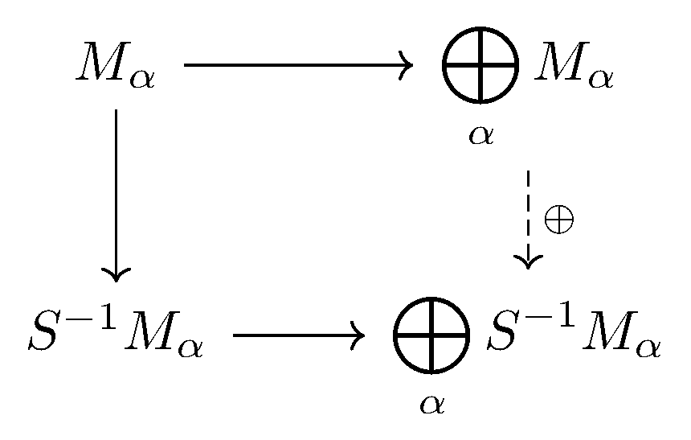We claim that this induced mapping satisfies the universal property of $S^{-1}\left(\bigoplus_\alpha M_\alpha\right).$ Indeed, instantiate some mapping of $A$-modules where $\bigoplus_\alpha M_\alpha\to N$ where $N$ is an $S^{-1}A$-module so that we want a unique mapping $\bigoplus_\alpha S^{-1}M_\alpha\to N$ making the diagram commute.
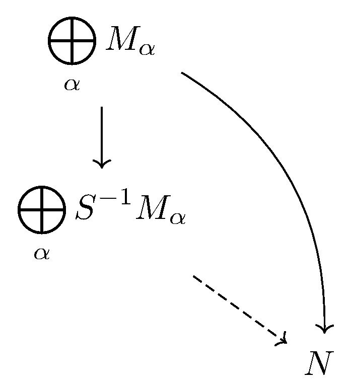Indeed, re-expand out the diagram as before.
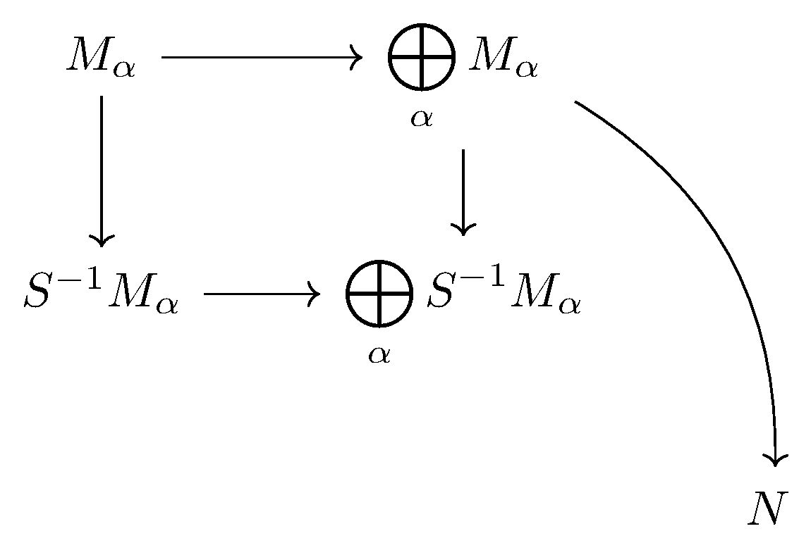Then the universal property of localization on $S^{-1}M_\alpha,$ we have a unique mapping $S^{-1}M_\alpha\to N$ making the diagram commute.
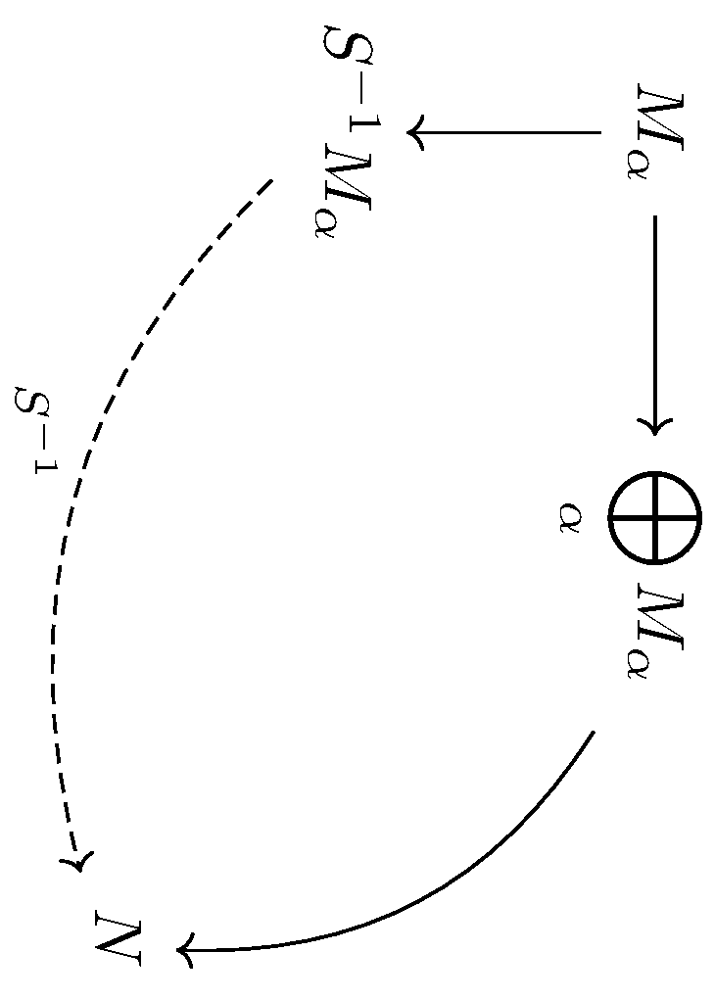So lastly, the universal property of $\oplus$ on the $S^{-1}M_\alpha$ gives us a unique mapping $\bigoplus_\alpha S^{-1}M_\alpha\to N$ making the diagram commute.
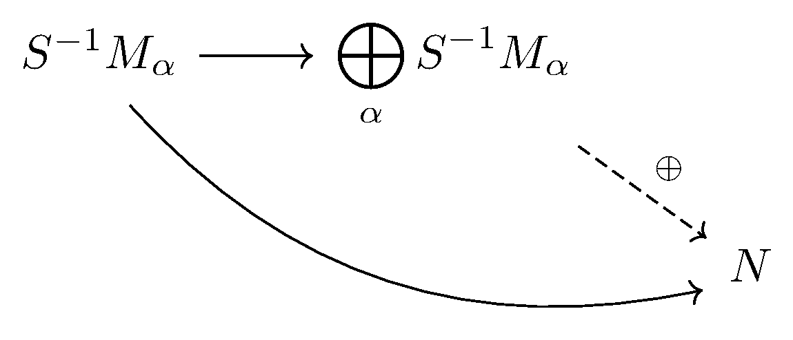This is what we wanted. To review, the entire following diagram commutes.
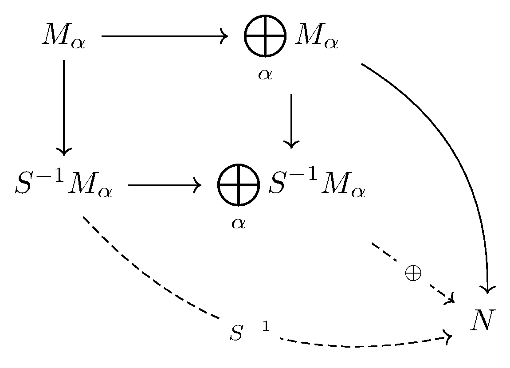We now provide a second proof. Again we start with the obvious mappings.
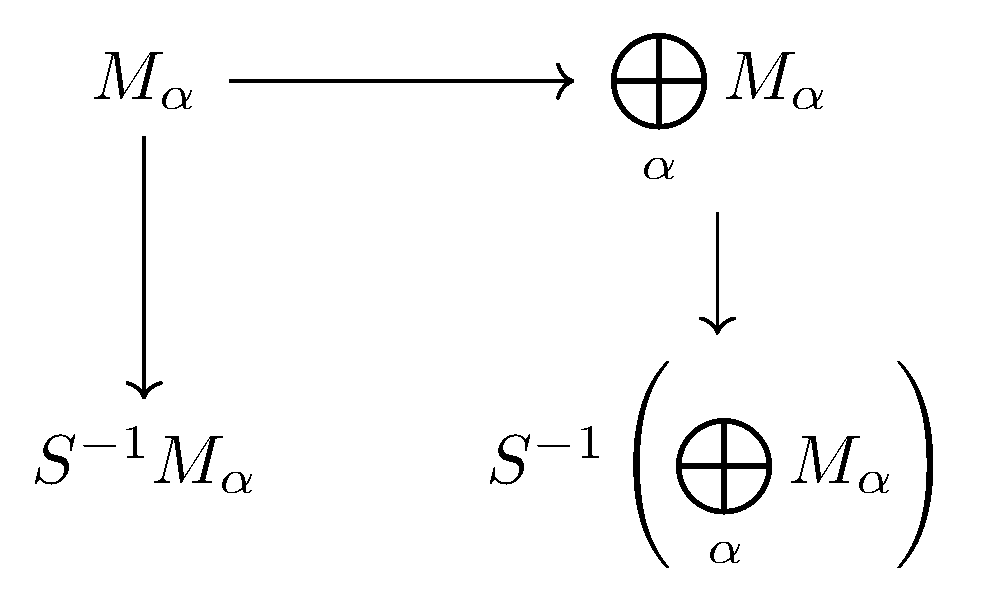Now, $S^{-1}\left(\bigoplus_\alpha M_\alpha\right)$ is an $S^{-1}A$-module, so the universal property of $S^{-1}M_\alpha$ gives us one mapping $S^{-1}M_\alpha\to S^{-1}\left(\bigoplus_\alpha M_\alpha\right)$ making the diagram commute.
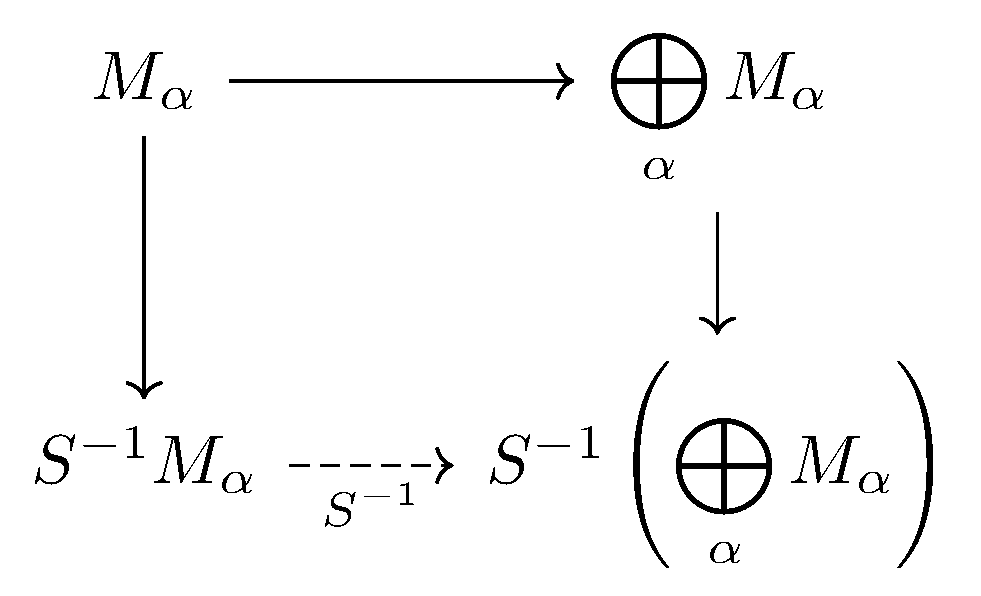We claim that $S^{-1}\left(\bigoplus_\alpha M_\alpha\right)$ satisfies the universal property of $\bigoplus_\alpha S^{-1}M_\alpha,$ which will be enough. Indeed, instantiate some $N$ for which we have a mapping $S^{-1}M_k\to N,$ and we want a unique mapping $S^{-1}\left(\bigoplus_\alpha M_\alpha\right)\to N$ commuting with it.
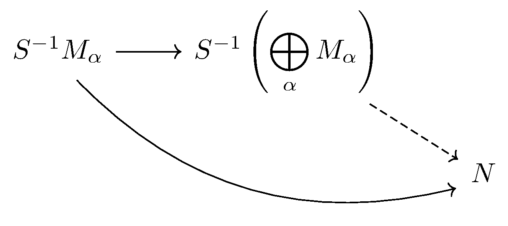However, expanding out the diagram, we see that there is a map $M_\alpha\to S^{-1}M_\alpha\to N,$ so the universal property of $\oplus$ gives us a unique mapping $\bigoplus_\alpha M_\alpha$ making the diagram commute.
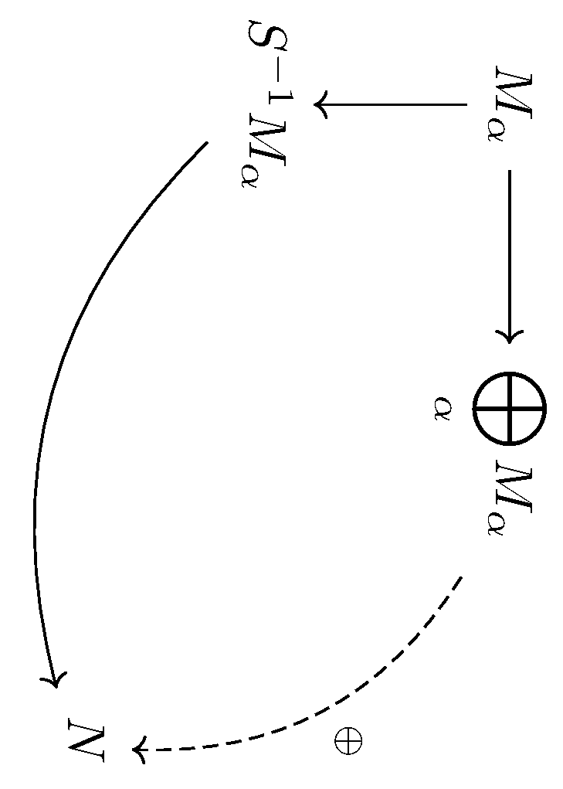But then the universal property of localization gives us a unique mapping $S^{-1}\left(\bigoplus_\alpha M_\alpha\right)\to N$ commuting with the above map.
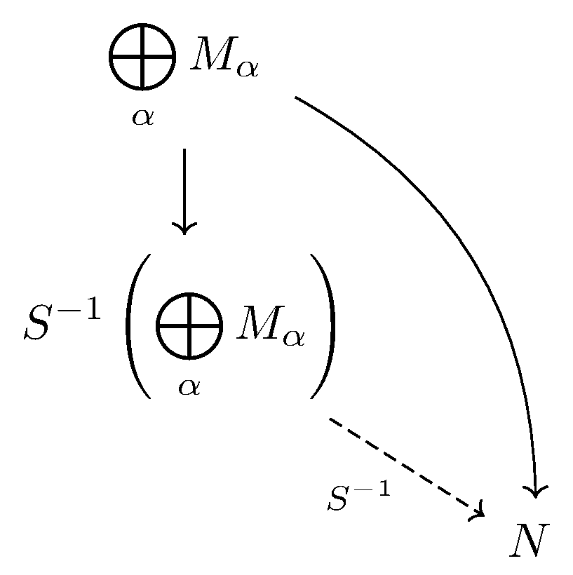This is what we wanted. To review, the entire following diagram commutes.
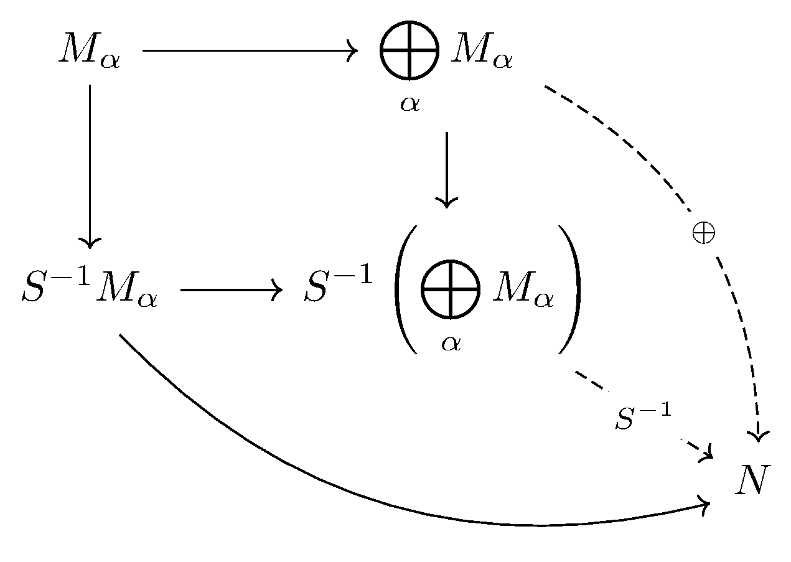The pretty pictures are pretty.